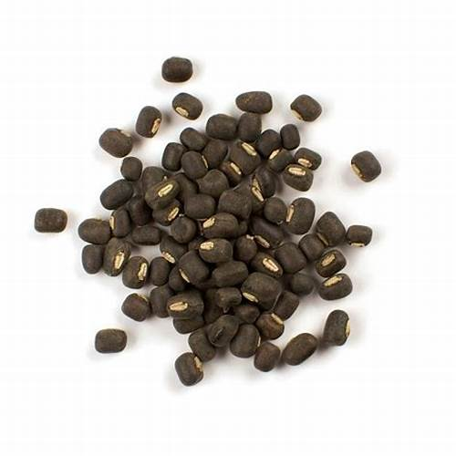

1. Seasons for Growing Urad

Urad, also known as black gram, is a leguminous crop that thrives in warm and tropical climates. It can be grown in the following seasons:
- Kharif Season: Ideal for planting in the monsoon, especially in tropical and subtropical regions, as the crop requires a warm and humid environment.
- Rabi Season: In some regions, urad is grown in the winter with minimal irrigation for a rabi harvest.
- Summer: Urad can also be planted in spring for a summer harvest, particularly in areas with controlled irrigation.